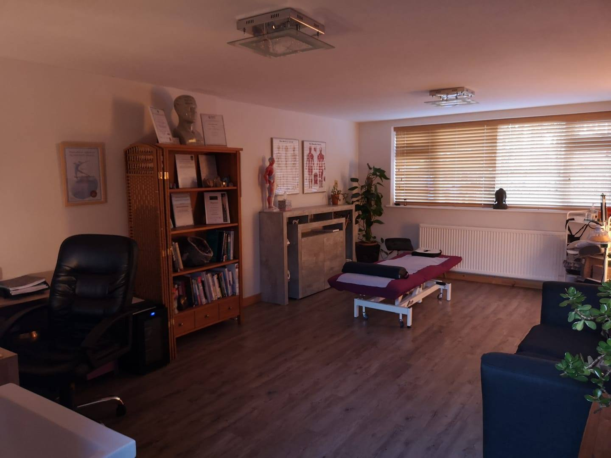

Maria Christoforou
With a background in recreational sports, I understand first-hand the frustration of injuries and persistent pain. That personal experience drove me into complementary therapy nearly 20 years ago, and it continues to fuel my passion today.
Over the years I've worked with an incredibly diverse range of clients — from people living with chronic pain conditions and post-surgical recovery, to elite athletes and semi-professional fitness enthusiasts. Every person is different, and that's what makes this work so rewarding.
My philosophy is simple: I treat the person, not just the symptoms. Every session is tailored to your individual needs, looking at the whole picture to find the root cause and deliver lasting results.
Advanced Professional Credentials
Nearly 20 years of continuous professional development, with over 60 additional certifications and CPD workshops beyond these core qualifications.
Interested in How These Qualifications Can Help You?
With nearly 20 years of training across multiple disciplines, I can tailor a treatment plan that draws on exactly the right techniques for your needs.
How I Work With You
Every treatment journey begins with understanding your unique situation. Here's what you can expect when you visit Touch Physique Therapies.
Initial Consultation
We start with a thorough discussion of your medical history, current concerns, lifestyle, and goals. This helps me build a complete picture before any hands-on work begins.
Assessment
A full-body assessment identifies areas of tension, restriction, and imbalance — not just where it hurts, but what might be causing the problem in the first place.
Tailored Treatment
Drawing on my range of specialist therapies, I design a treatment plan that's completely bespoke to you. I may combine techniques within a single session for the best results.
Ongoing Support
After each session, I provide aftercare advice and we review your progress together. Many conditions resolve in just 2–3 sessions; others benefit from ongoing maintenance.
Values at the Heart of My Practice
Holistic Care
I treat the whole person, not just isolated symptoms. By understanding your body as a connected system, I can address the root cause of your pain and help you achieve lasting improvement.
Continuous Learning
With over 60 additional certifications and CPD workshops, I never stop developing my skills. Staying at the forefront of complementary therapy means you always receive the most effective treatments available.
Giving Back
From volunteering with Macmillan on a hospital cancer care unit for over three years, to providing humanitarian aid in Sarajevo, Bosnia & Herzegovina — using my skills to help those in need is central to who I am.